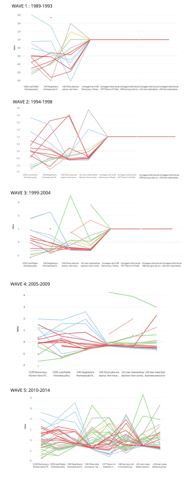

With this scales, I used Tableau to create parallel coordinates which were used as a tool to find correlations between variables. I created different parallel coordinates for each time period.

It is important to notice that not every time period has the same data. That is why some of them ends with straight lines, they actually mean lack of data.
Although the number of countries can make it a little complicated, we can see that there are big variations between the variables. We can find some negative correlations. For example, countries with a higher V40 number (meaning they accept more homosexuals) tend to have a lower v45 number (which means they don't think men have priority in a scarce job market). In other words, we can say that countries tend to be more "progressive" as a hole, that is: if they accept homosexuality, women tend to be more equal as men. It can be that both variables are a measure of "macho" traits in a society, but this needs further investigaion.